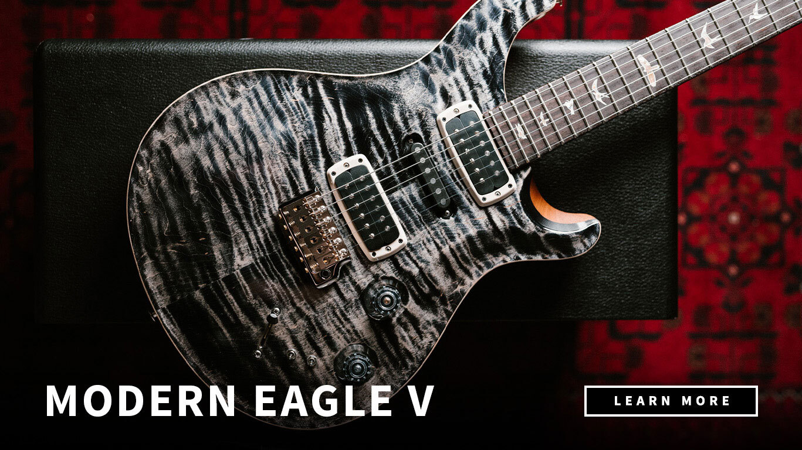
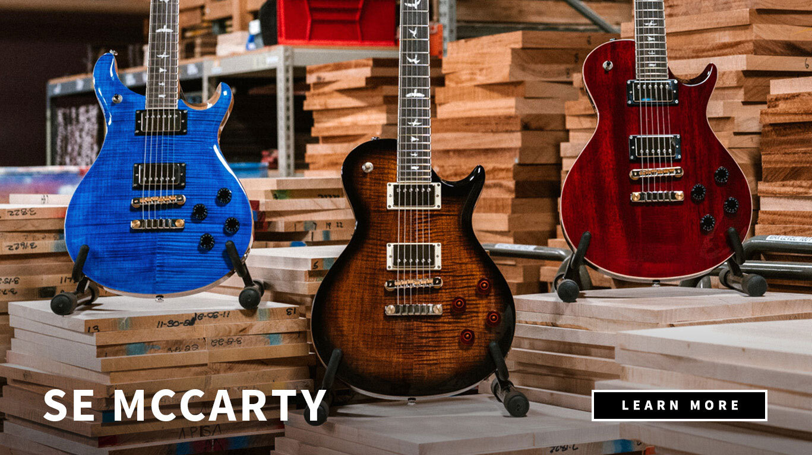
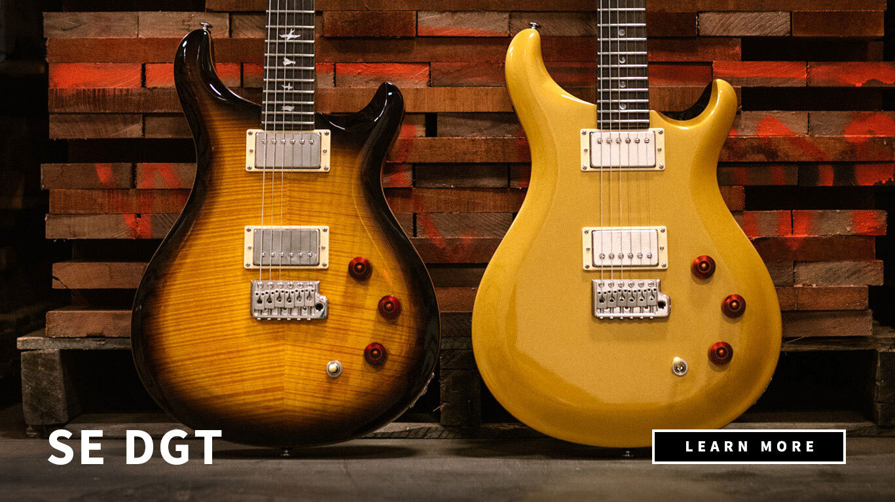

Selección Paul Reed Smith
Estas guitarras producidas en colaboración con la marca PRS son de máxima calidad. Hechas con los mejores materiales, brindan un cálido y vibrante sonido.
- Modern Eagle V: Equipada con humbuckers TCI en la posición del mástil y el puente. Una simple bobina -singlecoil- PRS en la posición media. Ccontrolados por perillas de volumen y tono con push / pull y un selector de cinco vías.
- SE Mccarty: Integrada de un cuerpo sólido con cuerpo de caoba. 2 pastillas Humbucking - Oro negro. Diapasón de palisandro. Cuello de caoba. Parte superior de arce.
- SE DGT: Diseñada con un mástil de Madera Caoba. Construcción del cuello Una pieza. Barra de armadura PRS de doble efecto. Forma del cuello DGT. Profundidad del cuello 27/32" Ancho del diapasón 1 21/32".
¡Realizá tu pedido para poder añadir al stock tu guitarra ideal!
| MARCA | MODELO | PRESUPUESTO |
|---|